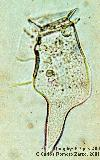
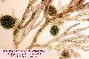

| Niveles básicos | Características | Ejemplos |
| Protofítico | Células aisladas o agregados de células
semejantes que pueden vivir y reproducirse de forma
independiente |
 |
| Talofítico | Individuos pluricelulares poiquilohídricos
con células ± diferenciadas por su función: células
somáticas y células reproductoras; pueden llegar a
formar tejidos |
 |
| Cormofítico | Individuos pluricelulares homeohídricos con
tejidos y órganos diferenciados con funciones diferentes |
 |